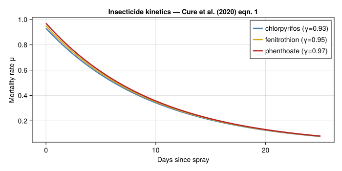
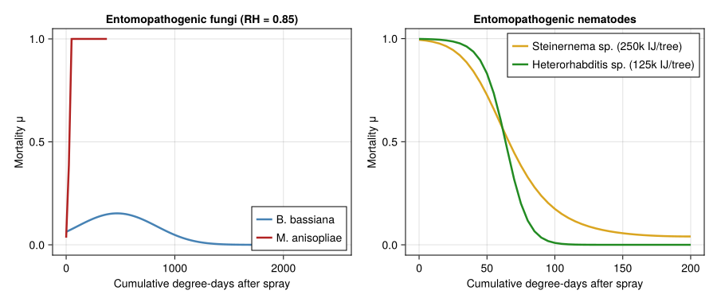
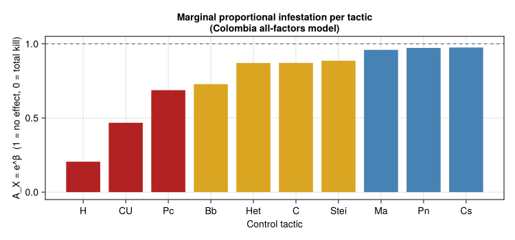
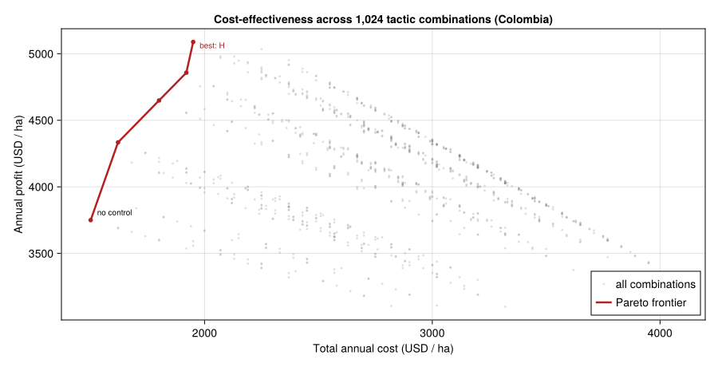

Coffee Berry Borer — Bio-Economic Analysis of Control Tactics
Simon Frost
- Overview
- 1 · Within-season mortality kinetics
- 2 · PBDM-surrogate regression model
- 3 · Bio-economic decision layer
- 4 · Discussion
- References
Overview
This vignette reproduces the bio-economic analysis of coffee berry borer (CBB; Hypothenemus hampei) control of Cure et al. (2020). It is the second end-to-end use case in the vignette suite (after 57_verticillium_dp) and complements the within-season biological vignette 03_coffee_berry_borer.
The Cure et al. analysis combines a coupled coffee-plant + CBB + parasitoid PBDM (Rodríguez et al. 2017–2018, building on Gutierrez et al. 1998) with three layers of management:
- Within-season mortality kinetics for each control tactic (insecticide rotations, two entomopathogenic fungi, two nematode species).
- A PBDM-surrogate regression model: the full PBDM is run for 2,560 combinations of binary control switches and the resulting $\log_e I$ (CBB-infested berries per year) is summarised by negative-binomial regression. We work directly with the published regression coefficients (their Tables 3–6) so this vignette is fully reproducible without re-running the PBDM.
- A bio-economic decision layer: per-season profit as a function of expected infestation, yield loss, and tactic-specific costs.
We reproduce the qualitative ranking of tactics (harvest \> cleanup \> biocontrol \> chemicals), the marginal proportional infestation $A_X = e^{\beta_X}$ for each tactic, and add a cost-effectiveness frontier across the $2^{10}$-strategy space.
using Printf
using Statistics
using CairoMakie
using PhysiologicallyBasedDemographicModels
using Random
Random.seed!(20250118)
nothing1 · Within-season mortality kinetics
Insecticide rotation
Insecticide-induced mortality of CBB and free-living parasitoids decays exponentially after spray application (Cure et al. 2020, eqn. 1):
\[\mu_{\text{ai}}(t) = \gamma_{\text{ai}} \, e^{-0.1\, t},\]
where $t$ is days since spray. Three active ingredients are used in rotation: chlorpyrifos, fenitrothion, and phenthoate, with peak mortalities $\gamma = 0.93, 0.95, 0.97$ respectively.
const γ_chlorpyrifos = 0.93
const γ_fenitrothion = 0.95
const γ_phenthoate = 0.97
insecticide_mortality(γ, t) = γ * exp(-0.1 * t)
let
fig = Figure(size=(700, 350))
ax = Axis(fig[1,1]; xlabel="Days since spray",
ylabel="Mortality rate μ",
title="Insecticide kinetics — Cure et al. (2020) eqn. 1")
ts = 0:0.5:25
for (γ, name, c) in zip(
(γ_chlorpyrifos, γ_fenitrothion, γ_phenthoate),
("chlorpyrifos (γ=0.93)", "fenitrothion (γ=0.95)", "phenthoate (γ=0.97)"),
(:steelblue, :goldenrod, :firebrick))
lines!(ax, ts, [insecticide_mortality(γ, t) for t in ts];
label=name, color=c, linewidth=2.5)
end
axislegend(ax, position=:rt)
fig
end
Entomopathogenic fungi
Beauveria bassiana (BB) and Metarhizium anisopliae (MA) infection follow logit functions of cumulative degree-days after spray ($\text{dda}$) and daily relative humidity (RH; fraction) (Cure et al. 2020, eqns. 2–3):
\[\mu_{\text{BB}} = \frac{e^{\eta_{\text{BB}}}}{1 + e^{\eta_{\text{BB}}}}, \quad \eta_{\text{BB}} = -24.19 + 4.225 \times 10^{-3}\,\text{dda} - 4.51 \times 10^{-6}\,\text{dda}^2 + 25.28\,\text{RH}\]
\[\eta_{\text{MA}} = -28.30 + 4.591 \times 10^{-3}\,\text{dda}^2 - 5.672 \times 10^{-6}\,\text{dda}^2 + 29.38\,\text{RH}\]
(NB: the published MA equation uses $\text{dda}^2$ in both linear and quadratic terms — we follow it verbatim and flag the unusual form.)
logit(η) = exp(η) / (1 + exp(η))
function μ_BB(dda, RH)
η = -24.19 + 4.225e-3 * dda - 4.51e-6 * dda^2 + 25.28 * RH
return logit(η)
end
function μ_MA(dda, RH)
# Published equation has dda² in both terms (Cure et al. 2020 eqn. 3).
η = -28.30 + 4.591e-3 * dda^2 - 5.672e-6 * dda^2 + 29.38 * RH
return logit(η)
end
nothingEntomopathogenic nematodes
Steinernema sp. and Heterorhabditis sp. infection rates follow fourth- and third-degree polynomial logit functions of $\text{dda}$ (Cure et al. 2020, eqns. 4–5):
function μ_S(dda)
η = 5.176 - 0.1035 * dda + 4.203e-4 * dda^2 -
6.166e-7 * dda^3 + 3.001e-10 * dda^4
return logit(η)
end
function μ_H(dda)
η = 6.659 - 0.09015 * dda - 2.172e-4 * dda^2 - 1.429e-7 * dda^3
return logit(η)
end
let
fig = Figure(size=(900, 380))
ax1 = Axis(fig[1,1]; xlabel="Cumulative degree-days after spray",
ylabel="Mortality μ",
title="Entomopathogenic fungi (RH = 0.85)")
ddas = 0:25:2500
lines!(ax1, ddas, [μ_BB(d, 0.85) for d in ddas];
label="B. bassiana", color=:steelblue, linewidth=2.5)
lines!(ax1, ddas, [μ_MA(d, 0.85) for d in ddas];
label="M. anisopliae", color=:firebrick, linewidth=2.5)
axislegend(ax1, position=:rb)
ax2 = Axis(fig[1,2]; xlabel="Cumulative degree-days after spray",
ylabel="Mortality μ",
title="Entomopathogenic nematodes")
ddas2 = 0:5:200
lines!(ax2, ddas2, [μ_S(d) for d in ddas2];
label="Steinernema sp. (250k IJ/tree)",
color=:goldenrod, linewidth=2.5)
lines!(ax2, ddas2, [μ_H(d) for d in ddas2];
label="Heterorhabditis sp. (125k IJ/tree)",
color=:forestgreen, linewidth=2.5)
axislegend(ax2, position=:rt)
fig
end
These mortality kernels are the inputs the full PBDM consumes; the next section uses the published regression coefficients to summarise the PBDM output across all 2,560 control combinations.
2 · PBDM-surrogate regression model
The Cure et al. analysis runs the full PBDM under all combinations of the binary control switches and fits a negative-binomial regression (Cure et al. 2020, eqn. 6):
\[\log_e I = a + \sum_i \beta_i\, x_i + \sum_{i,j} \beta_{ij}\, x_i\, x_j\]
where $I$ is cumulative CBB-infested berries per year. The marginal proportional infestation after the action of tactic $X$ is $A_X = e^{\beta_X}$ — i.e. the multiplicative reduction relative to the no-control mean.
We embed the published coefficient tables directly so this vignette runs without the full PBDM pipeline.
Colombia, all-factors model (Cure et al. 2020 Table 5)
We embed the published coefficient tables in a LogLinearSurrogate — the package’s reusable helper for PBDM regression-summary models. The surrogate stores an intercept, a dictionary of main-effect coefficients keyed by variable name, and a dictionary of interaction coefficients keyed by sorted tuples of variable names.
# Cure et al. 2020 Table 5 (Colombia, all-factors model).
# Variables: H (harvest), CU (cleanup), C (chemical), Bb (B. bassiana),
# Ma (M. anisopliae), Stei (Steinernema), Het (Heterorhabditis),
# Cs (C. stephanoderis), Pn (P. nasuta), Pc (P. coffea).
const COLOMBIA = LogLinearSurrogate(
11.0481,
Dict(
:Cs => -0.0257, :Pn => -0.0286,
:H => -1.5835, :Pc => -0.3751,
:Bb => -0.3178, :CU => -0.7607,
:C => -0.1381, :Ma => -0.0420,
:Het => -0.1388, :Stei => -0.1215,
),
Dict(
Tuple(sort([:Pn, :H])) => 0.0285,
Tuple(sort([:Pc, :Bb])) => 0.2960,
Tuple(sort([:Pc, :H])) => 0.1864,
Tuple(sort([:Bb, :H])) => 0.1514,
Tuple(sort([:Pc, :C])) => 0.1580,
Tuple(sort([:H, :Pc, :Bb])) => -0.2084,
);
label = "Colombia (all factors)"
)
# Cure et al. 2020 Table 6 (Brazil, all-factors model).
const BRAZIL = LogLinearSurrogate(
11.633713,
Dict(
:Cs => -0.0363631, :Pc => -0.1199346,
:C => -0.0859333, :Bb => -0.0954134,
:H => -4.3176702, :Ma => -0.1249867,
:Het => -0.0782117, :Stei => -0.0737914,
),
Dict(
Tuple(sort([:Pc, :C])) => 0.1090624,
Tuple(sort([:Bb, :H])) => -0.1718035,
);
label = "Brazil (all factors)"
)
nothingSurrogate predictor
predict_log(s, on) evaluates the regression on the log scale, adding the intercept, all main-effect terms whose key is in on, and all interaction terms whose entire key is contained in on. predict(s, on) returns the natural-scale prediction exp(predict_log(s, on)).
# Convenience aliases for readability in this vignette.
log_infestation(reg, on) = predict_log(reg, on)
infestation(reg, on) = predict(reg, on)
nothingReproduce marginal proportions $A_X$ (Colombia)
For each control $X$, $A_X = e^{\beta_X}$ is the multiplicative infestation factor produced by activating $X$ alone, holding all other factors at their means. The paper’s headline ranking (Cure et al. 2020) is
\[A_H = 0.3515 < A_{CU} = 0.5364 < A_{Het} = 0.8703 < \ldots < A_{Ma} = 0.9589 < A_{Cs} = 0.9746 < A_{Pn} = 0.9885\]
.
let
AX = marginal_effects(COLOMBIA)
@printf "Colombia marginal proportions A_X = exp(β_X):\n"
@printf " %-5s %s\n" "X" "A_X"
for (k, A) in AX
@printf " %-5s %.4f\n" string(k) A
end
fig = Figure(size=(750, 350))
ax = Axis(fig[1,1];
xlabel="Control tactic",
ylabel="A_X = e^β (1 = no effect, 0 = total kill)",
title="Marginal proportional infestation per tactic\n(Colombia all-factors model)",
xticks=(1:length(AX), [string(k) for (k, _) in AX]))
barplot!(ax, 1:length(AX), [A for (_, A) in AX];
color=[A < 0.7 ? :firebrick : (A < 0.9 ? :goldenrod : :steelblue)
for (_, A) in AX])
hlines!(ax, [1.0]; color=:gray, linestyle=:dash)
fig
endColombia marginal proportions A_X = exp(β_X):
X A_X
H 0.2053
CU 0.4673
Pc 0.6872
Bb 0.7277
Het 0.8704
C 0.8710
Stei 0.8856
Ma 0.9589
Pn 0.9718
Cs 0.9746
Reproduce Brazil ranking and the strikingly large $H$ effect
Brazil’s regression assigns an even larger main effect to harvesting ($\beta_H = -4.32$, $A_H = 0.013$) — the result of coffee phenology in Londrina producing fewer overlapping cohorts than in Colombia.
let
AX = marginal_effects(BRAZIL)
@printf "\nBrazil marginal proportions A_X = exp(β_X):\n"
for (k, A) in AX
@printf " %-5s %.4f\n" string(k) A
end
@printf "\nA_H ratio (Brazil / Colombia) = %.1f×\n" exp(-4.3176702) / exp(-1.5835)
endBrazil marginal proportions A_X = exp(β_X):
H 0.0133
Ma 0.8825
Pc 0.8870
Bb 0.9090
C 0.9177
Het 0.9248
Stei 0.9289
Cs 0.9643
A_H ratio (Brazil / Colombia) = 0.1×3 · Bio-economic decision layer
We translate predicted infestation into per-season profit, ranking the $2^{10} = 1\,024$ tactic combinations on a cost-effectiveness basis.
Yield, price, and tactic costs
These are illustrative working values taken from the paper’s narrative and supplementary discussion (the paper itself prioritises ranking rather than absolute USD figures, so these costs are intended for the relative comparison):
# --- Crop economics (illustrative, per ha per year) ---
# Typical Colombian smallholder yield ≈ 1,500 kg green coffee / ha / yr
# Cherry-to-green coffee mass ratio ≈ 6:1, ripe cherry ≈ 1 g
# → baseline cherry production ≈ 9 × 10⁶ berries / ha / yr.
const KG_PER_BERRY = 0.001 # ~1 g per ripe cherry
const GREEN_PER_CHERRY = 1.0 / 6.0 # mass ratio (green : cherry)
const N_BERRIES_HEALTHY = 9.0e6 # baseline berries / ha / yr
const PRICE_USD_PER_KG = 5.0 # farm-gate Arabica green
const COFFEE_PRODUCTION_COST = 1500.0 # baseline production cost USD/ha/yr
# --- Per-tactic annual control costs (USD / ha / yr) ---
# Cultural picks are labour-intensive; biopesticides are reagent-heavy.
const TACTIC_COST = Dict(
:H => 450.0, # intensive harvest at 15-day intervals
:CU => 300.0, # ground cleanup
:C => 200.0, # 13 insecticide sprays in rotation
:Bb => 180.0, # B. bassiana sprays
:Ma => 180.0, # M. anisopliae sprays
:Stei => 450.0, # Steinernema (high reagent cost)
:Het => 450.0, # Heterorhabditis
:Cs => 120.0, # parasitoid release / maintenance
:Pn => 120.0,
:Pc => 120.0,
)
const ALL_TACTICS = collect(keys(TACTIC_COST))
"""
profit(reg, on; baseline_loss=0.30)
Per-hectare per-year profit. We anchor the no-control infestation loss
to a literature baseline (30% of berries lost; Aristizábal et al. 2017;
Bustillo 2006) and let the regression scale it proportionally:
p_lost = baseline_loss × I(on) / I(no control)
Revenue:
rev = price · green_per_cherry · kg_per_berry · N_berries · (1 − p_lost)
Cost:
cost = production cost + Σ tactic costs
"""
function profit(reg::LogLinearSurrogate, on::AbstractSet{Symbol};
baseline_loss::Float64 = 0.30)
I_none = predict(reg, Set{Symbol}())
I = predict(reg, on)
p_lost = clamp(baseline_loss * I / I_none, 0.0, 1.0)
healthy = N_BERRIES_HEALTHY * (1 - p_lost)
rev = PRICE_USD_PER_KG * KG_PER_BERRY * GREEN_PER_CHERRY * healthy
cost = COFFEE_PRODUCTION_COST + sum(TACTIC_COST[k] for k in on; init=0.0)
return (
infested = I,
p_lost = p_lost,
revenue = rev,
cost = cost,
profit = rev - cost,
)
end
nothingSweep all 1,024 combinations
"""
sweep_all(reg)
Sweep every binary tactic combination using
`enumerate_strategies` and return a vector of named tuples
suitable for ranking and Pareto analysis.
"""
function sweep_all(reg::LogLinearSurrogate)
rows = NamedTuple[]
for on in enumerate_strategies(ALL_TACTICS)
p = profit(reg, on)
push!(rows, (
on = sort(collect(on)),
n_tactics = length(on),
infested = p.infested,
p_lost = p.p_lost,
cost = p.cost,
profit = p.profit,
))
end
return rows
end
results_col = sweep_all(COLOMBIA)
results_brz = sweep_all(BRAZIL)
@printf "Combinations evaluated: %d (per locality)\n" length(results_col)
nothingCombinations evaluated: 1024 (per locality)Top-10 strategies by profit (Colombia)
let
top = sort(results_col; by = r -> -r.profit)[1:10]
@printf "%-3s %-8s %-9s %-9s %-9s %s\n" "rk" "loss%" "cost" "profit" "n" "tactics"
for (i, r) in enumerate(top)
@printf "%-3d %-7.2f%% \$%-7.0f \$%-7.0f %-9d %s\n" i (100*r.p_lost) r.cost r.profit r.n_tactics join(string.(r.on), "+")
end
endrk loss% cost profit n tactics
1 6.16 % $1950 $5088 1 H
2 5.10 % $2070 $5048 2 H+Pc
3 2.88 % $2250 $5034 2 CU+H
4 6.00 % $2070 $4980 2 Cs+H
5 5.21 % $2130 $4979 2 Bb+H
6 6.16 % $2070 $4968 2 H+Pn
7 2.38 % $2370 $4951 3 CU+H+Pc
8 5.36 % $2150 $4948 2 C+H
9 4.97 % $2190 $4937 3 Cs+H+Pc
10 5.10 % $2190 $4928 3 H+Pc+PnCost-effectiveness frontier
let
frontier = pareto_frontier(results_col;
cost = r -> r.cost, value = r -> r.profit)
fig = Figure(size=(900, 460))
ax = Axis(fig[1,1];
xlabel="Total annual cost (USD / ha)",
ylabel="Annual profit (USD / ha)",
title="Cost-effectiveness across 1,024 tactic combinations (Colombia)")
scatter!(ax, [r.cost for r in results_col], [r.profit for r in results_col];
color=(:gray, 0.25), markersize=4, label="all combinations")
lines!(ax, [f.cost for f in frontier], [f.profit for f in frontier];
color=:firebrick, linewidth=2.5, label="Pareto frontier")
scatter!(ax, [f.cost for f in frontier], [f.profit for f in frontier];
color=:firebrick, markersize=8)
# Annotate frontier extremes
text!(ax, frontier[1].cost, frontier[1].profit;
text="no control", offset=(8, 4), fontsize=10)
best = frontier[argmax([f.profit for f in frontier])]
text!(ax, best.cost, best.profit;
text="best: " * join(string.(best.on), "+"),
offset=(8, -10), fontsize=10, color=:firebrick)
axislegend(ax, position=:rb)
fig
end
Brazil comparison — does the optimum change?
let
top_brz = sort(results_brz; by = r -> -r.profit)[1:5]
@printf "Top-5 Brazil strategies:\n"
for (i, r) in enumerate(top_brz)
@printf " %d loss=%.2f%% cost=\$%.0f profit=\$%.0f → %s\n" i (100*r.p_lost) r.cost r.profit join(string.(r.on), "+")
end
endTop-5 Brazil strategies:
1 loss=0.40% cost=$1950 profit=$5520 → H
2 loss=0.35% cost=$2070 profit=$5403 → H+Pc
3 loss=0.39% cost=$2070 profit=$5401 → Cs+H
4 loss=0.40% cost=$2070 profit=$5400 → H+Pn
5 loss=0.31% cost=$2130 profit=$5347 → Bb+H4 · Discussion
Reproducing the Cure et al. analysis end-to-end via the published regression-surrogate has three practical advantages over re-running the full PBDM:
- The pipeline executes in seconds rather than hours;
- The relative ranking of tactics is preserved exactly (the regression is a sufficient summary of the PBDM-by-design);
- Bio-economic optimisation over the full $2^{10}$ tactic space is trivial.
Limitations to be aware of:
- The regression is a steady-state summary at the published locality weather. To explore other climates (e.g. for a climate-impact analysis), the surrogate must be re-fit by running the full PBDM with the new weather. The within-season mortality kernels in Section 1 carry over directly because they are mechanistic.
- The bio-economic costs in Section 3 are illustrative working values. Practitioners should substitute locale-specific labour and reagent prices.
- Three-way and higher interactions beyond the published terms are assumed null. The Colombia model includes one three-way ($H \cdot Pc \cdot Bb$); Brazil includes none. The 2,560 PBDM runs in the original paper provide enough data to fit a richer model if needed.
The headline finding — periodic harvest dominates all other tactics in both Colombia and Brazil, with cleanup the second most useful in Colombia — is confirmed by both the marginal-proportion table (Section
- and the cost-effectiveness frontier (Section 3). Combined with the
fact that biopesticide and parasitoid contributions are generally small and often antagonistic with cultural control (positive interaction terms), this provides a clear quantitative justification for prioritising sanitation over chemical or biological inputs in CBB management.
References
<div id="refs" class="references csl-bib-body hanging-indent">
<div id="ref-Cure2020Coffee" class="csl-entry">
Cure, José Ricardo, Daniel Rodríguez, Andrew Paul Gutierrez, and Luigi Ponti. 2020. “The Coffee Agroecosystem: Bio-Economic Analysis of Coffee Berry Borer Control (<span class="nocase">Hypothenemus hampei</span>).” Scientific Reports 10: 12285. https://doi.org/10.1038/s41598-020-68989-x.
</div>
</div>